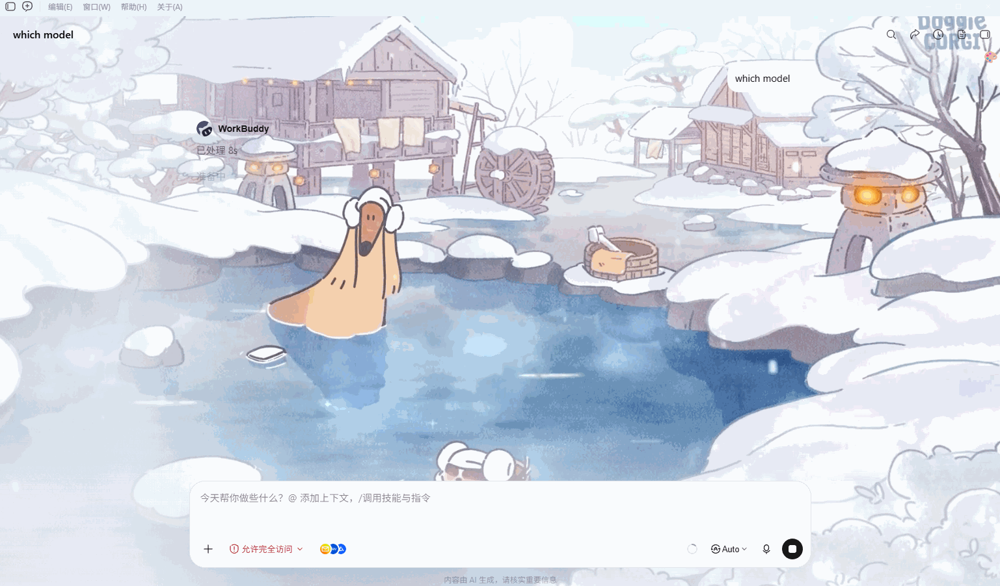
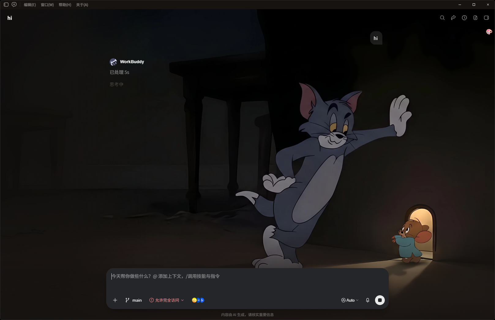
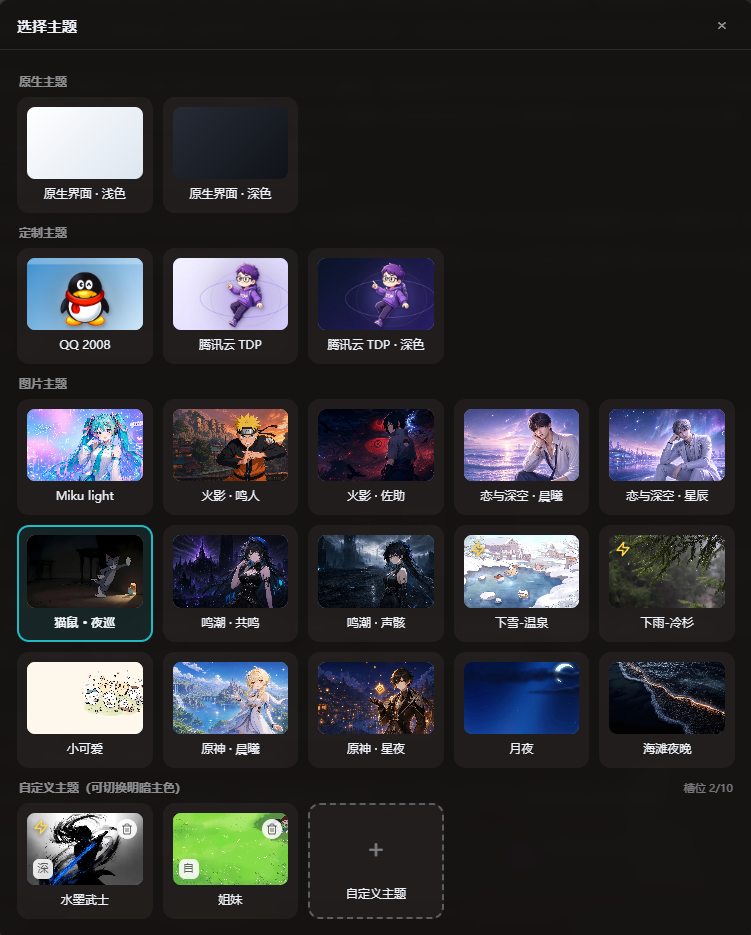

这是一个面向 WorkBuddy 桌面端的第三方换肤工具——不改 app.asar、不破坏签名，而是把配色与背景注入正在运行的界面。可逆、可切换，一张图就是一种心情。—— dress it up, keep it reversible.
CAPABILITIES · 它动的是渲染层，不是功能本体
改颜色、换背景，顺手补几个每天用得到的小交互——WorkBuddy 该干的活一样不少，只是脸变了。三句话能讲完它的本事：
右上角 🎨 菜单按原生 / 定制 / 图片 / 自定义分组，点一下就换。按钮能拖拽，位置会记住。
丢一张图进去，自动吸出配色生成专属皮肤；动图保留动画，MP4 抽帧取色、循环静音当背景。
回顶部 / 上一问 / 下一问 / 回到底——四个小按钮，翻长对话不再靠滚轮一下下蹭。



内置 18 款主题，从初音、原神到 QQ 2008 都有；不够就上传自己的图——相当于给工作台贴了张你的海报。
—— your desktop, your rules.
MECHANISM · 核心是 Chromium DevTools Protocol
CDP 允许外部进程连上运行中的页面，并在它的上下文里执行脚本。整个工具用 Node.js 编排，无第三方依赖，四步走：
--remote-debugging-port=9223127.0.0.1:9223/json/list，筛出指向 renderer/index.html 的页面Runtime.evaluate 把样式和主题菜单写进页面pause 调用清理函数把注入拆掉皮肤本体是一张极简清单——一张背景图加四个配色，就能生成整套界面变量覆盖：
{
"id": "my-skin",
"name": "My Skin",
"hero": "hero.webp",
"colors": { "accent": "#24C9D7", "surface": "#F7FBFF" }
}—— inject, don't patch.
TRADE-OFFS · 为什么是它，以及为什么不总是它
不写安装包、不破签名；官方更新不用重打补丁；菜单即点即换，pause 一键拆除。
CDP 的天性：完整重启后皮肤消失，重跑一次 apply 恢复上次选择。非永久注入。
不修改安装包，所以升级不会像补丁那样被「顶掉」。但升级伴随重启，皮肤会失效——重跑一次 apply 即恢复。真正要留意的是：新版本若改了界面变量或结构，主题需针对性适配。免去重打补丁，不等于永远免适配。
—— reversible by design.
USAGE · 三种姿势，都是一步。先保存你正在跑的任务
双击 scripts/apply.command，或在终端跑：
./scripts/apply.command./scripts/pause.command。双击仓库根目录的 Start.bat 即可，零配置。指定主题：
Start.bat mice-catStart.bat 是 apply.ps1 的批处理包装，内部以 -ExecutionPolicy Bypass 调起 PowerShell，不受系统执行策略限制。它用 WMI 派生 WorkBuddy 进程、不附着启动窗口——关掉窗口不会把 WorkBuddy 一起带走。成功自动关窗，失败会停住并显示原因。懒得动手？把仓库地址发给任意 AI 编程助手，它会读 SKILL.md 自己装完：
用这个开源项目帮我更换 WorkBuddy 的主题—— one double-click away.
asar 补丁式 vs CDP 注入式 · 关键选型
换肤无非两条路：改磁盘上的安装产物，或改内存里跑着的界面。这个项目选了后者，理由是可逆与免维护。
| 维度 | asar 补丁式 | CDP 注入式（本项目） |
|---|---|---|
| 本质 | 解包 app.asar、改 bundle、重打包 | 调试端口启动，Runtime.evaluate 注入运行时 |
| 持久性 | 落盘后重启不丢 | 重启失效，重跑 apply 恢复 |
| 代码签名 | 破坏官方签名与完整性 | 不碰官方文件，原封不动 |
| 更新适配 | 每次官方更新都要重新 diff 重打 | 不随更新失效，界面变了仍需适配 |
| 撤销还原 | 依赖备份；补丁错位可能起不来 | 页内清理 + pause 即撤销 |
| 安全暴露 | 安装包来源与补丁内容可信度 | 调试端口暴露面；只连本机回环 |
asar 补丁唯一的硬优势是持久性——重启不丢、不用看护。代价是破坏签名、每次更新重打、还原靠备份、补丁错位可能让应用起不来。对「换肤」这种非刚需，这个风险收益比不成立。CDP 的软肋是重启失效与调试端口暴露，前者靠「重跑即恢复」兜底，后者靠只回本机回环来控制。
对「轻量、可逆、不追版本」的目标，它是更优解。除非哪天需求变成「企业强制统一皮肤、不允许用户关」——那时 asar 补丁的持久性才值得拿出来再聊。
—— change the runtime, not the file.